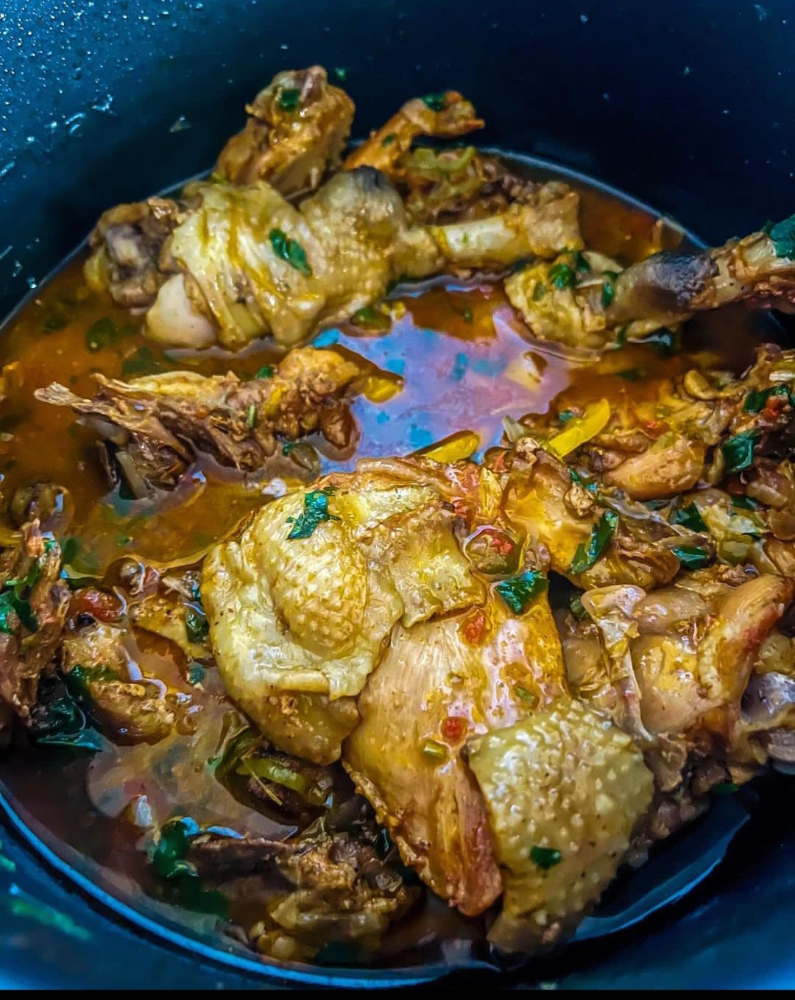

Chicken

Enjoying free range chicken
Ingredients
1 tablespoon Garlic paste
1 tablespoon garlic paste
Steps:
Put the chicken in the instant pot with water, Kosher salt and the garlic cloves. Let it cook on the poultry setting.
Once it's done, separate the broth from the chicken and stick the chicken into the air frier to dry out the moisture and make the skin a little crunchy.
In the instant pot and at the poultry setting, fry up the onions, garlic paste and the long chillies, add in the crushed bullion cube. Let that fry until aromatic.
Add in the airfried chicken plus the coriander stalks.
Let that cook in the sauce and add in the dark soy sauce plus tomatoes. Once it begins to thicken, add back the chicken stock then let that cook down.
Just before ou turn down that heat, add in the yellow bell pepper plus the coriander.
Ready to Devour.